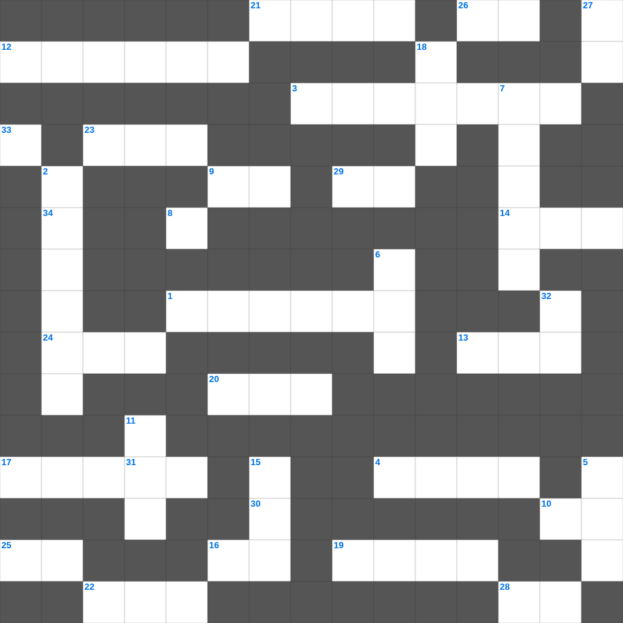

야고보서: 행함이 없는 믿음
📌 서비스 정의
십자가로세로는 교회 주보와 주일학교에서 사용할 수 있는 성경 기반 가로세로 퍼즐 서비스입니다. 성경 인물, 사건, 핵심 구절을 바탕으로 제작되었습니다. 온라인 풀이 및 인쇄 기능을 제공합니다.
📖 야고보서란?
야고보서는 믿음이 실제 삶의 행함으로 나타나야 함을 강조하며, 시험과 인내, 말과 지혜에 대한 매우 실천적인 가르침을 담은 서신입니다.
📚 야고보서의 주요 사건·주제
시험과 인내에 대한 가르침 · 행함이 있는 믿음에 대한 강조 · 말(언어)의 능력에 대한 경고 · 지혜와 겸손에 대한 가르침 · 기도의 능력에 대한 가르침
야고보서의 말씀을 퀴즈로 배우는 야고보서 가로세로 퀴즈입니다. 가로 힌트와 세로 힌트를 보고 35개의 단어를 맞춰보세요. 인쇄도 가능하고 정답 확인도 바로 되니 소그룹 모임이나 가정 예배 시간에도 활용하실 수 있습니다.

📝 가로 힌트
1. 실로암의 뜻
3. 선한 사람이 강도 만난 자를 도와준 이야기
4. 다윗이 법궤를 안치하기 전 머물렀던 집
8. 번제단 네 모퉁이에 있는 것
9. 이스라엘 열두 지파를 상징하는 보석들
10. 요나가 다시스로 가기 위해 배를 탄 항구
12. 제사장의 관에 붙인 금패 글귀
13. 대제사장의 흉패에 박힌 보석 개수
14. 모세의 누나
16. 곡물로 드리는 제사
17. 엘리야에게 떡을 대접한 사르밧 과자
19. 베드로가 밤새 그물을 던졌으나 잡지 못했을 때 하신 일
20. 매주 교체하는 거룩한 떡
21. 예수님이 베드로와 야고보와 요한을 데리고 기도하신 동산
22. 삼손의 힘의 비밀을 알아낸 여인
23. 평안히 눕고 이것하기도 하리니
24. 노아의 방주에 비가 내린 일수
24. 예수님이 광야에서 금식하신 일수
25. 예수님이 우리 죄를 대신해 죽으신 은혜
26. 불뱀에 물린 자들이 이것을 보면 살았다
📝 세로 힌트
2. 다윗이 밧세바를 범하고 나단에게 들은 말
5. 솔로몬이 성전 건축을 위해 백향목을 가져온 곳
6. 예수님이 무화과나무를 저주하신 곳 근처
7. 에베소 사람들이 숭배한 여신
11. 구름 기둥과 이것 기둥
15. 죄를 속하기 위해 드리는 제사
18. 함께 가져온 물고기의 마리 수
27. 유대인의 왕, 나사렛 이것
32. 잘못을 뉘우치고 하나님께 돌아오는 것
33. 네 이웃의 집을 이것내지 말라
🧩 이 퍼즐에서 배우는 내용
이 퍼즐은 야고보서: 행함이 없는 믿음의 핵심 단어와 개념을 자연스럽게 복습할 수 있도록 구성되었습니다. 주일학교 수업이나 개인 성경공부에서 학습 내용을 점검하는 용도로 바로 활용할 수 있습니다.
🧑🏫 교회 교육 자료 활용
이 퍼즐은 주일학교 교재 추천 자료로 활용할 수 있고, 주일학교 주보에 넣기 좋은 분량으로 구성되어 있습니다. 수업용 주일학교 교안에 활동지로 붙이거나, 예배 후 복습용 주일학교 공과교재로 바로 사용할 수 있습니다.
🏷️ 키워드
야고보서 가로세로 퀴즈, 야고보서, 십자가로세로, 성경퀴즈, 말씀퀴즈, 가로세로퍼즐, 주일학교 교재 추천, 주일학교 주보, 주일학교 교안, 주일학교 공과교재